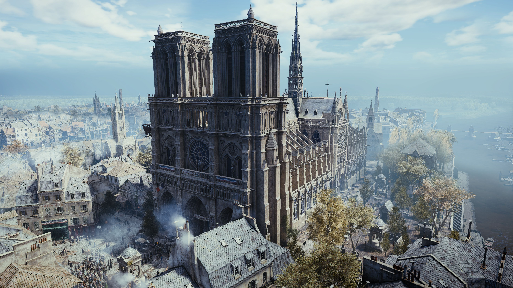
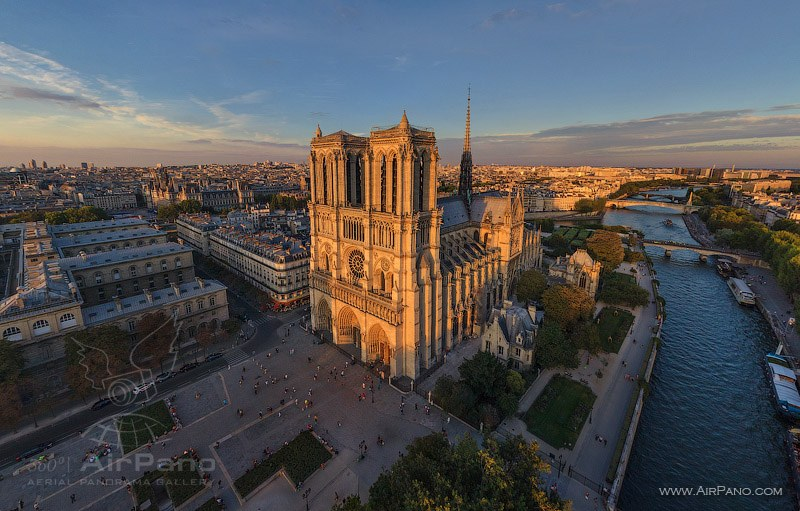

Is this the real life? Is this just fantasy?
Caught in a landslide, no escape from reality.--Queen
BY MARTY SLIVA Assassin’s Creed Unity is a game of impossible peaks and disappointing valleys. Its highs of movement, customization options, and just the city of Paris itself pierce the sky like the spire of Notre Dame. On a purely technical level, Unity is a marvel to walk through and admire. But at the same time, a lot of my journey through the French Revolution felt as cold and heartless as the darkest depths of the catacombs. I was never given a real reason to care about new Assassin Arno, or the events that transpired. Instead, I had to find my own fun throughout my 30 hours in Unity, which was generally easy to do in its large sandbox assassination scenarios. However, it’s a bit disappointing to see how few of the long-standing problems with the series have been solved by the upgrade to the new generation of gaming hardware.
The new consoles’ graphical power is put to good use in Ubisoft’s recreation of 18th-century Paris, which is absolutely stunning. As we’ve come to expect from an Assassin’s Creed game, it’s sprawling, gorgeous, and absolutely packed with sights to see and things to do. Climbing to the top of Notre Dame, synchronizing with one of the series’ iconic viewpoints, and watching the camera pull back and show you the breadth of your universe is staggering.
Each of the various districts unfolds with its own sense of character and environmental storytelling, from the ornate palaces of the privileged, to back-alleys running with the blood of the revolutionaries. But what makes it really unique and distinct from past games is its citizens, who form some of the largest, most impressive crowds I've ever encountered. In particular, a late-game mission involving Louis XVI was populated with several thousand characters, and wading through the crowd was one of the most memorable moments of the campaign.
Despite being technologically impressive and adding a lot to the atmosphere of Paris as a living and thriving city, I found myself oftentimes swearing at the digital hoards that populated the streets when I simply wanted to make my way from one place to another. As the story progressed, I found that the masses of Parisians mostly got in the way, and spotting repeating character models was a crude reminder I was playing a video game.
The disgruntled masses make it even more of a necessity to scurry along rooftops instead of the streets, and thankfully, this mode of transportation does not disappoint. Most of the time, traversal in Unity feels better than ever thanks to fantastic animations, buildings with plenty of climbable paths, and a new downward parkour system that adds certain finesse to the act of shimming down a wall, resolving one of my big gripes with previous AC games. (Unless there was a haystack handy, I usually just lept off and hoped that I had enough health to survive.)
When it all worked perfectly, guiding my Arno up, down, and across the Parisian skyline brought me a great sense of satisfaction. The key phrase there was “when it all worked,” because the series-long frustration of your assassin not doing quite what you want him to do is still present here. I found myself quickly losing momentum and clumsily hopping about whenever I tried to enter a window and explore any of Unity’s huge array of interior spaces. It was also particularly frustrating in stealth sections, which Unity emphasizes heavily. Navigating between pieces of cover is finicky, and it was never clear whether or not I was even hidden.